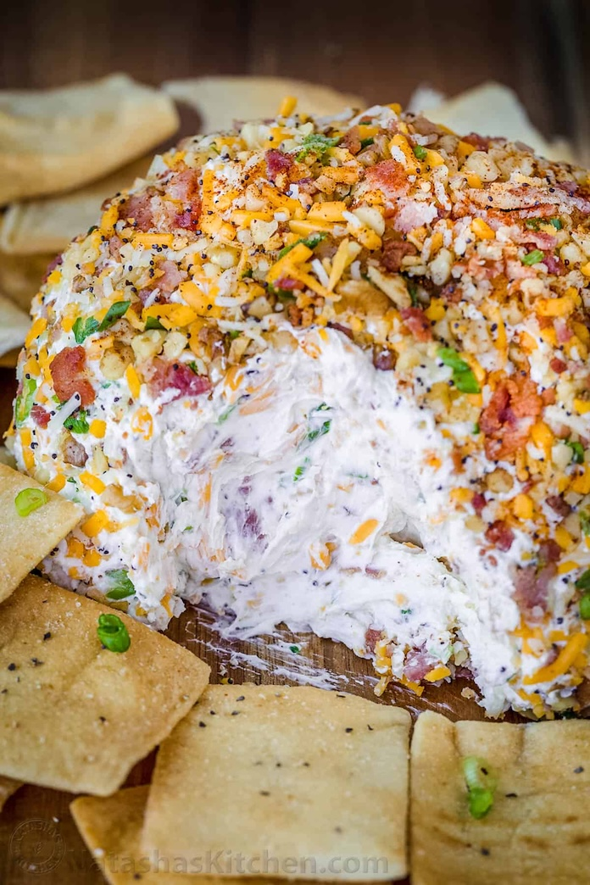

Diana's Holiday Cheese Ball

About this recipe
This is a family recipe by our cousin Dianna Churchman. Passed down to her by her family. It goes
great with ritz crackers and perfect for the next holiday get together.
Ingredients
3 8 oz pkgs of cream cheese, I prefer Kraft
5 Green Onions Chopped
1 Small Jar Dried Beef or the Budding Thin Beef
2 Cups Chopped Pecans
Instructions
- Cut dried beef and green onions into small pieces in a bowl. Mix cream cheese,
dried beef, and green onions
- Cover and chill for at least 2 hours, or preferably overnight
- About an hour before serving, form mixture into a ball and roll in pecans
- Serve with crackers